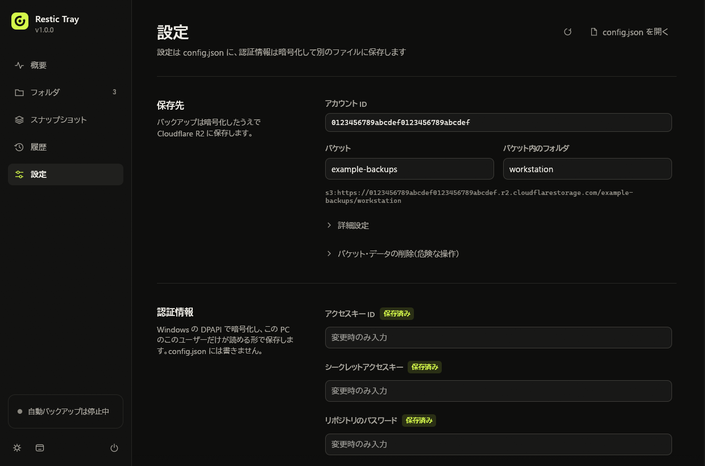

Initial Setup & Cloudflare R2
Create a dedicated Cloudflare R2 bucket and least-privilege API token, store DPAPI-encrypted credentials in Restic Tray, and initialize your repository.
Restic Tray stores encrypted backups directly in your own Cloudflare R2 bucket via Restic’s native s3: backend. Follow these steps to create a dedicated bucket, issue a least-privilege API token, and initialize your repository.
1. Create a Dedicated R2 Bucket
- Sign in to the Cloudflare Dashboard (
https://dash.cloudflare.com/) and open R2 Object Storage in the left sidebar. - Open Overview → Create bucket.
- Enter a Bucket name (3–63 characters, lowercase letters
a-z, digits0-9, and hyphens-; no leading or trailing hyphen — for examplemy-restic-backups). - Confirm Location (default Automatic or a nearby Location Hint) and Default Storage Class (normally Standard), then click Create bucket.
2. Find Your 32-Character Account ID
Restic Tray automatically builds the S3-compatible endpoint URL https://<ACCOUNT_ID>.r2.cloudflarestorage.com from your Account ID. Locate the 32-character hexadecimal Account ID either:
- In the right-hand Account Details panel on the R2 Overview page, or
- From the dashboard URL:
https://dash.cloudflare.com/<ACCOUNT_ID>/r2/....
3. Issue a Least-Privilege R2 API Token
- On the R2 Overview page, click Manage (or Manage R2 API Tokens) next to API Tokens under Account Details.
- Select Account API tokens (recommended for long-term use because it is not tied to an individual user profile) and click Create Account API token.
- Set a descriptive Token name (for example
restic-tray-main-pc). Issuing one token per PC lets you revoke a single machine’s access if it is ever lost. - Choose permissions according to the table below:
| Permission | Bucket Scoping | Capabilities | Recommendation |
|---|---|---|---|
| Object Read & Write | Supported (Specify bucket(s)) | Backup, snapshot list, restore, integrity check, forget --prune, prefix delete, and emptying all objects in the bucket. |
Recommended (least privilege). Deleting the bucket container itself returns 403 AccessDenied; empty it in Restic Tray and delete the empty bucket in Cloudflare Dashboard. |
| Admin Read & Write | Not available (all R2 buckets in account) | All of the above plus deleting the bucket container directly from Restic Tray. | Only if you specifically need in-app bucket deletion. Avoid for routine daily backups. |
- Under Specify bucket(s), choose Apply to specific buckets only and select only your dedicated backup bucket.
- Set TTL to Forever or your preferred rotation interval (if you set an expiry, rotate the token in Restic Tray before it expires).
- Click Create Account API Token and immediately record both the Access Key ID and Secret Access Key.
4. Configure Restic Tray & Initialize the Repository

設定) screen showing the Storage fields and Windows DPAPI credential inputs (demo values).- Launch Restic Tray and open 設定 (Settings) in the left sidebar.
- Fill in the fields using the mapping table below:
| Cloudflare Value | Restic Tray Field (設定 / Settings) | Storage Location |
|---|---|---|
| Account ID (32-char hex) | 保存先 (Storage) → アカウント ID | config.json (plain text, non-secret) |
| Bucket name | 保存先 (Storage) → バケット | config.json (plain text, non-secret) |
Optional prefix (e.g. workstation; blank = bucket root) |
保存先 (Storage) → バケット内のフォルダ | config.json (plain text, non-secret) |
| API token Access Key ID | 認証情報 (Credentials) → アクセスキー ID | config\credentials.dat (Windows DPAPI) |
| API token Secret Access Key | 認証情報 (Credentials) → シークレットアクセスキー | config\credentials.dat (Windows DPAPI) |
| Strong user-chosen encryption password | 認証情報 (Credentials) → リポジトリのパスワード | config\credentials.dat (Windows DPAPI) |
- Click 保存 (Save / Ctrl+S) in the bottom save bar to write the storage configuration to
config.json. - Click 認証情報を保存 (Save credentials) to encrypt and store the R2 keys and repository password in
config\credentials.dat. - Click リポジトリを作成 (Initialize repository) for a brand-new bucket or prefix. If connecting to a repository already initialized on another PC, click 接続を確認 (Verify connection) instead.
- Open フォルダ (Folders) to add folders, then run テスト実行 (Dry-Run) on 概要 (Overview) before your first full backup.
Prefix Guidelines (Single PC vs. Multi-PC)
- Single PC: Either leave バケット内のフォルダ (Prefix) blank to place the repository at the bucket root, or set a prefix such as
workstation(default isrestic-windows). Using a prefix lets you keep separate repositories in one bucket and safely delete only that prefix later. - Shared repository across multiple PCs: Configure the same Account ID, Bucket, Prefix, and Restic repository password on every PC. You can (and should) still issue a separate R2 API token for each PC.
Rotating a Leaked API Token
If an R2 Access Key ID or Secret Access Key is ever exposed in logs or a public issue:
- Immediately Revoke / Delete the compromised token under Cloudflare Dashboard → R2 Object Storage → Manage R2 API Tokens.
- Issue a fresh bucket-scoped Object Read & Write token.
- In Restic Tray 設定 → 認証情報, enter the new アクセスキー ID and シークレットアクセスキー and click 認証情報を保存. Leaving the リポジトリのパスワード field empty preserves your existing stored repository password.
- Run 接続を確認 (Verify connection) to confirm access with the rotated credentials.